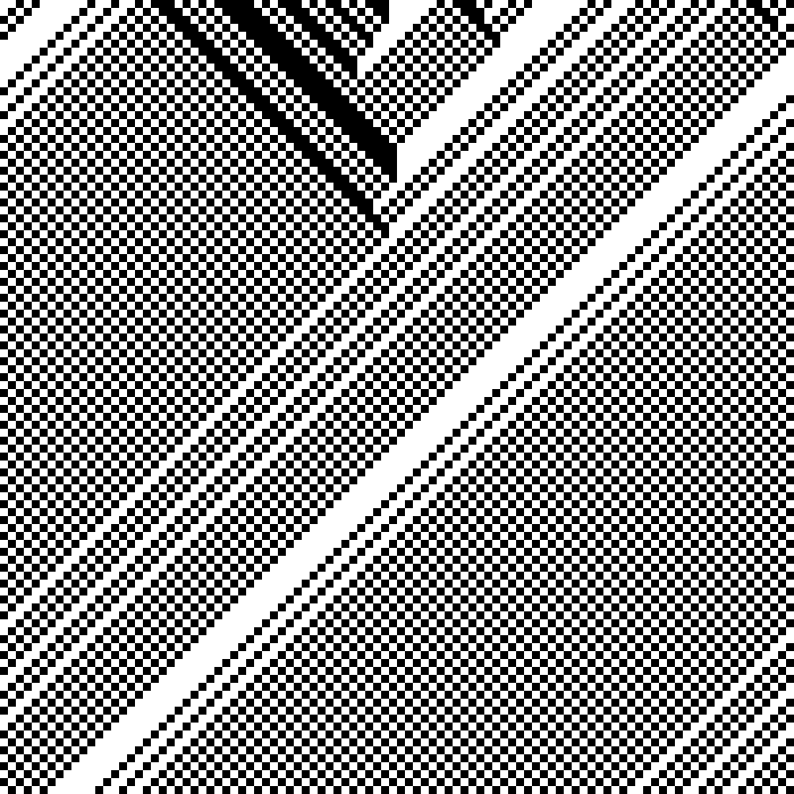
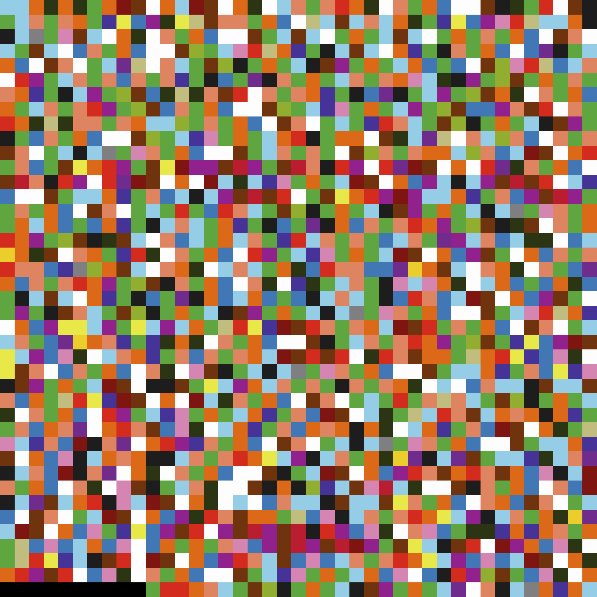
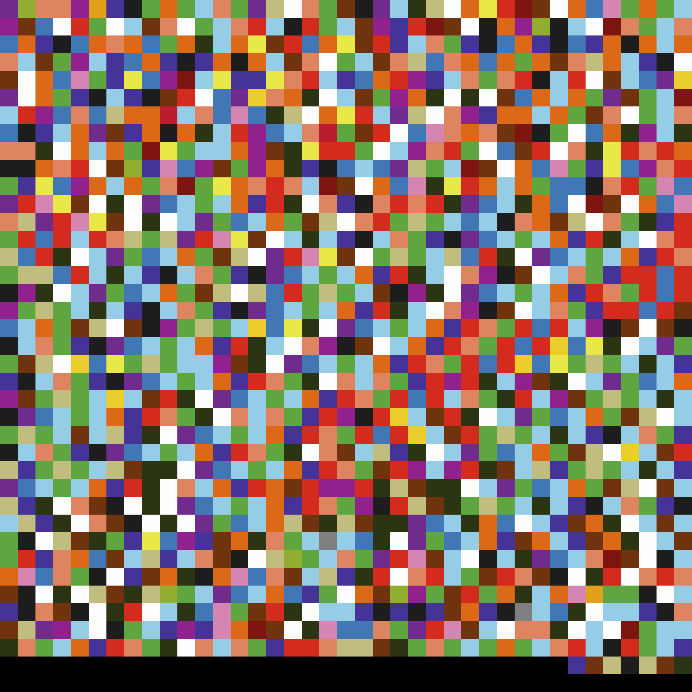
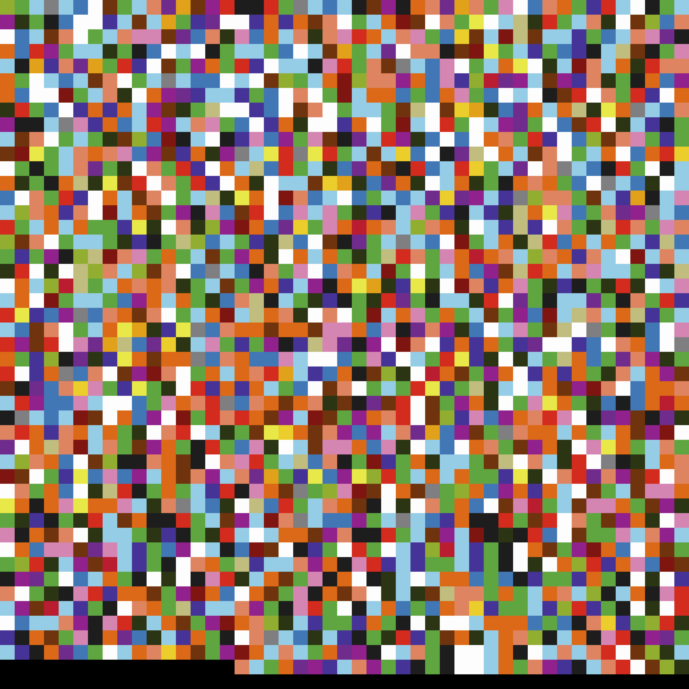
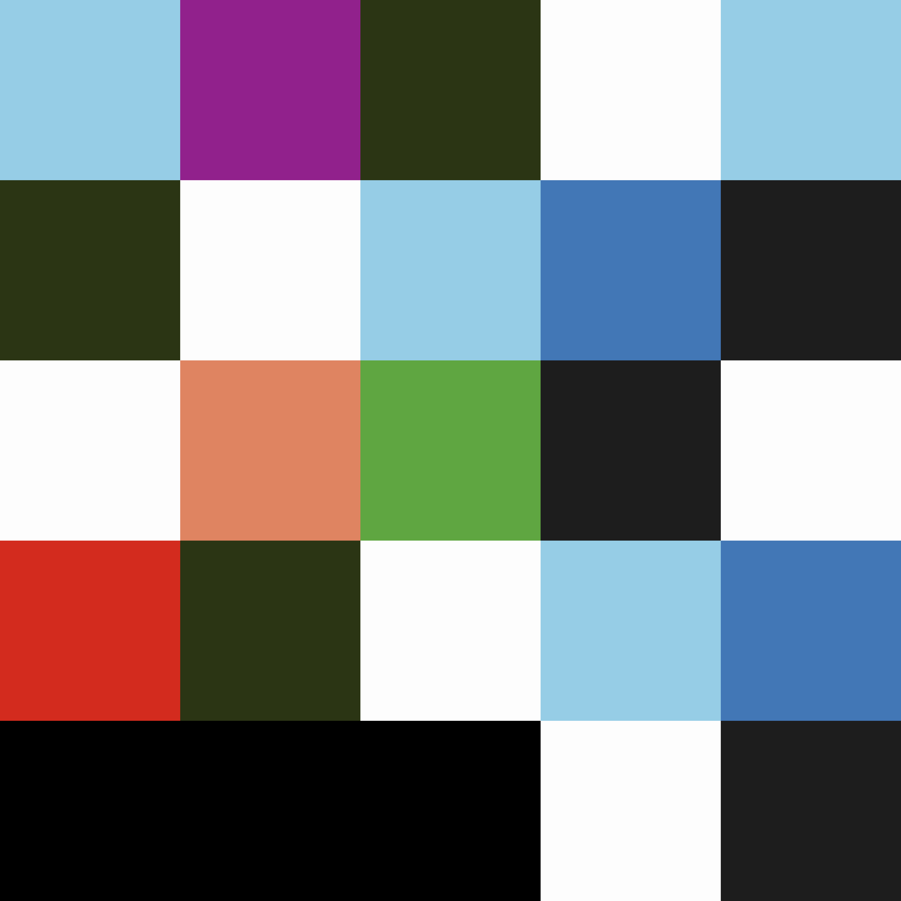
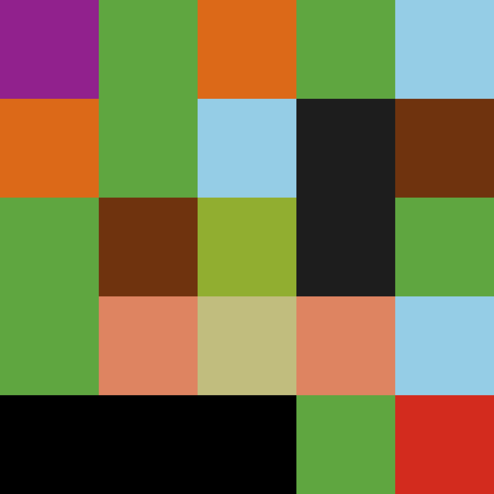
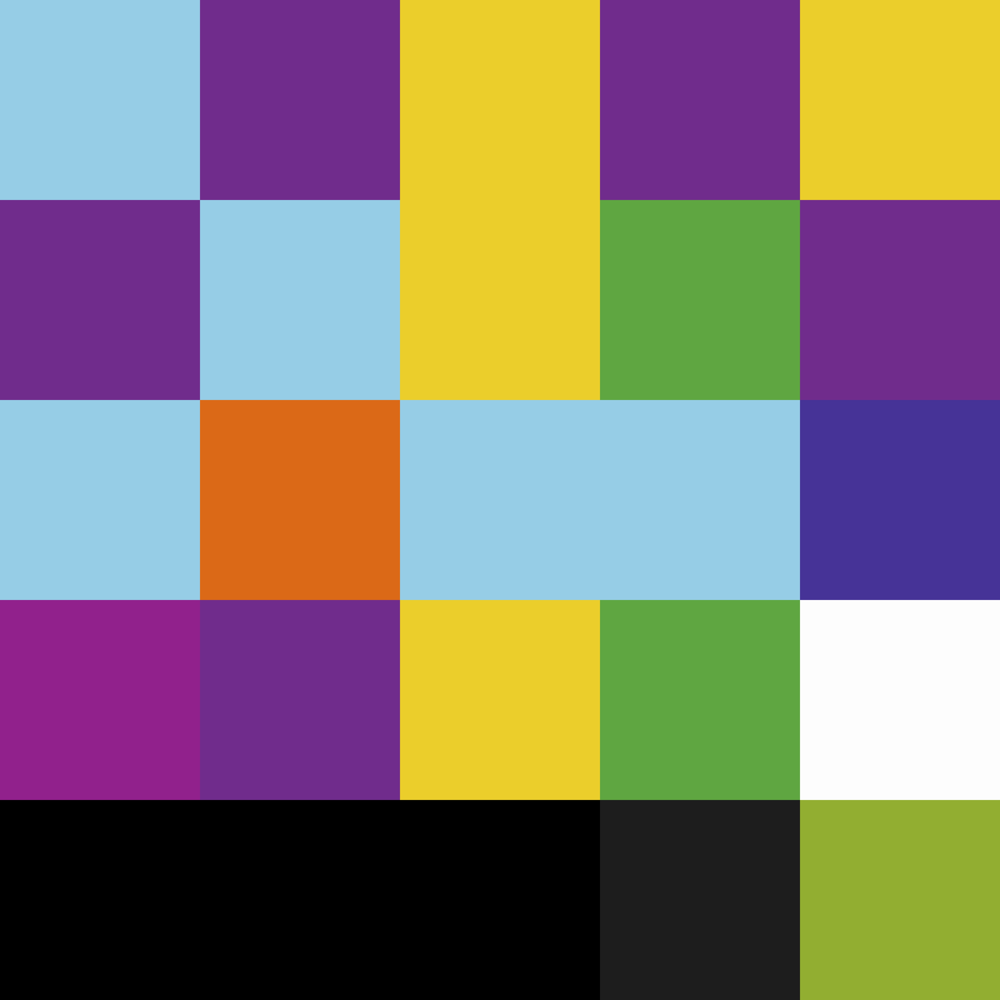

__ ___ ___ _______ ___ _______ |/"| / ")|" | /" "| |" || _ "\ (: |/ / || | (: ______) || |(. |_) :) | __/ |: | \/ | |: ||: \/ (// _ \ \ |___ // ___)_ ___| / (| _ \\ |: | \ \ ( \_|: \(: "| / :|_/ )|: |_) :) (__| \__) \_______)\_______)(_______/ (_______/
Letter Frequency II -- Visualizations
In order to better procrastinate on my master's thesis (an analysis of my database of translations into Yiddish), I've been getting into Rust and cellular automata. I have been thinking vaguely about how automata could be used to model literary production. Maybe a big bimodal graph of translators and publishers, with rules governing when publishers are born/die/survive? More to be seen...
But I think I just like how cellular automata look. I used to throw text data into .bmp's and see what would come out, and these representations of one dimensional cellular automata, with their strange periodicities, have a similar feel.

Remembering, this I thought to myself: why not use these methods to take a look at the Hebrew Bible? My first idea was to convert each Hebrew letter to a numerical, then binary representation. א, as the first letter, would be 0 or 00000 as expressed in five bit binary. ב would then be 00001, ג would be 00010, all the way up through ת (10101). Final letters are encoded as their normal forms. I would then write all these binary representations to an image in the wonderful .pbm format.
In case you're not familiar, .pbm, .pgm, and .ppm have ASCII formats, which makes them very human readable and fun to manipulate. A file that looks like this:
P1
# This is an example bitmap of the letter "J"
6 10
0 0 0 0 1 0
0 0 0 0 1 0
0 0 0 0 1 0
0 0 0 0 1 0
0 0 0 0 1 0
0 0 0 0 1 0
1 0 0 0 1 0
0 1 1 1 0 0
0 0 0 0 0 0
0 0 0 0 0 0
Will end up looking like this:

Pretty cool, right? A five-bit, square representation of Genesis 1 encoded this way looks like this:

| 00001 | 10011 | 00000 | 10100 | 01001 | 10101 | ... |
| ב | ר | א | ש | י | ת | ... |
Cool as this looks (to me anyway...), our eyes are really quite ill-equipped to read any of it. If you want you can sit there and decode byte by byte, but its very difficult to find patterns. But if we introduce color, patterns start to emerge.
So I decided to do the same basic thing but represent each of the 22 letters of the Hebrew alphabet with a different color. As luck would have it, in 1965 one Kenneth Kelly defined a 22-color palette designed for maximum contrast. I modified my code to use the colorful .ppm format, and began producing representations like this (read right to left):

Genesis 1The letter/color key is as follows:
א ב ג ד ה ו ז ח ת י כך ל מם נן ס ע פף צץ ק ר ש ת
It's still not the easiest thing to read, but some interesting patterns emerge. As mentioned in the previous blog post, there are a lot of yuds in Genesis 1, and accordingly the above representation is marbled thoroughly with a nice green. Due to its consecutive use, vav, which is represented with light blue, tends to form nice, evenly spaced, diagonal striations. It also tends to be the first color in most chapters, as in Genesis 11 and 19:

Genesis 11
Genesis 19ה, in orange, is also sprinkled evenly throughout, as are aleph and tav. When you look at these diagrams for long enough, you can start to pick out all the את's, which are represented by a white square followed by a dark gray-green square.
I also decided to make representations of individual verses, in order to take a look at some of the conclusions I made last time. And, as expected, Gen 10:28 is white with alephs:

Gen 1:23 is green with yuds:

Gen 49:19, the prophecy of Gad, has sort of a jester/Lakers look, due to the high occurence of gimel and daled.
This approach enables an interesting mix of very close and very distant reading. It highlights the smallest unit of Hebrew (the letter), and makes it visible over large swathes of text.
Can it help us learn anything? I'm not sure... But it sure does look cool. If you're interested, the code and all the images are available on my GitHub.